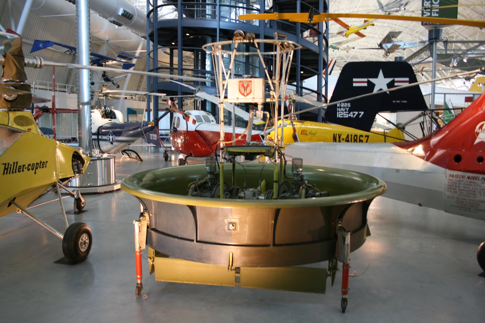

The police department at Florida Polytechnic University in Lakeland has unveiled what it says is the first piloted electric aircraft ever added to a US law enforcement fleet.
The machine is a Jetson ONE, a small Swedish-built electric craft that takes off straight up like a drone but carries one person sitting in an open frame. The university's version is painted black and white, with police decals and a light bar, and has been renamed Astro, after the dog in The Jetsons.
It weighs 154 pounds without its pilot or battery, tops out at about 63 mph and can stay in the air for roughly 20 minutes on a charge. Reports put the price at around $148,000.
So what will it be chasing?
The university says Astro could be used for keeping an eye on campus, reaching spots that are hard to get to and helping out after storms, for example by dropping off supplies. It will also double as a teaching tool for aerospace engineering students.
Police Chief Aaron Murray said: "Advanced air mobility is a technology on the rise, and we can either choose to be proactive or reactive as it develops."
Critics online were less sure. Futurism dug into the campus police's own annual crime report and found that the most common offence on campus in 2025 was the 'liquor law referral', with 13 cases. The department also already runs at least five surveillance drones.

For now, the question is mostly academic. Astro is still waiting for final approval from the Federal Aviation Administration before it can be used in actual police work. Futurism pointed out that it has a famous ancestor: the US Army's 1950s flying platforms, which were also meant to lift a single soldier into the air, and were quietly dropped.